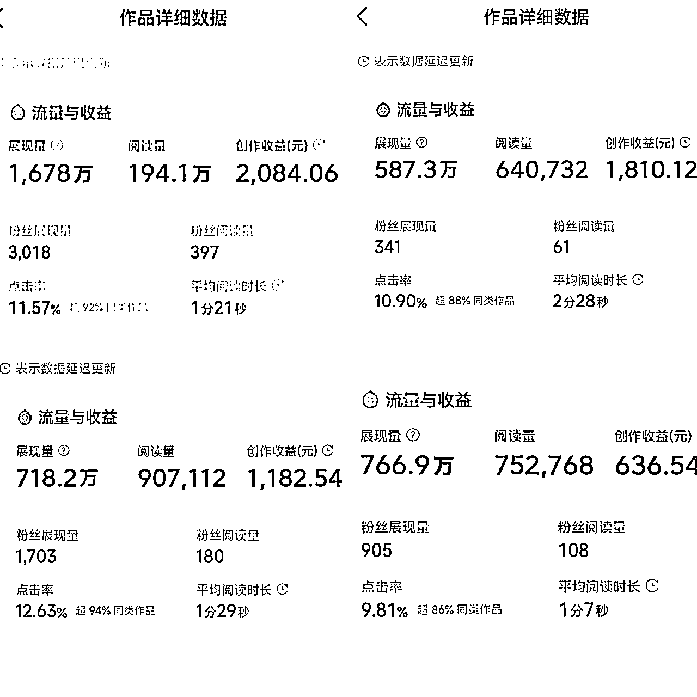
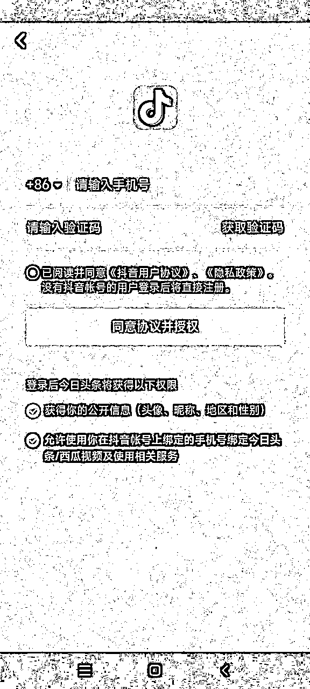
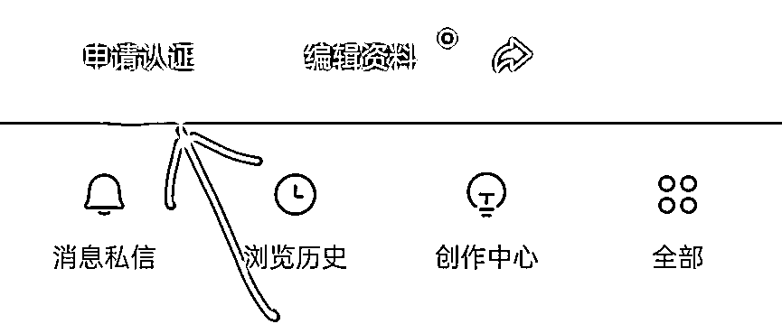
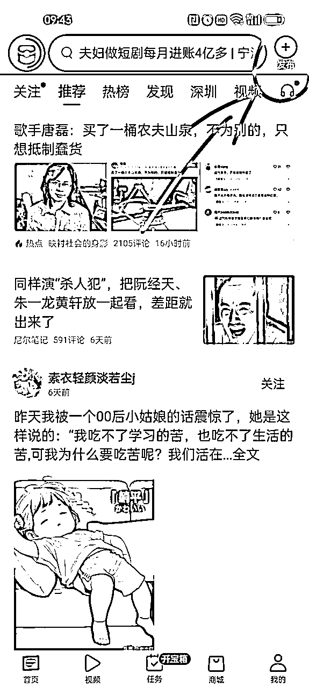
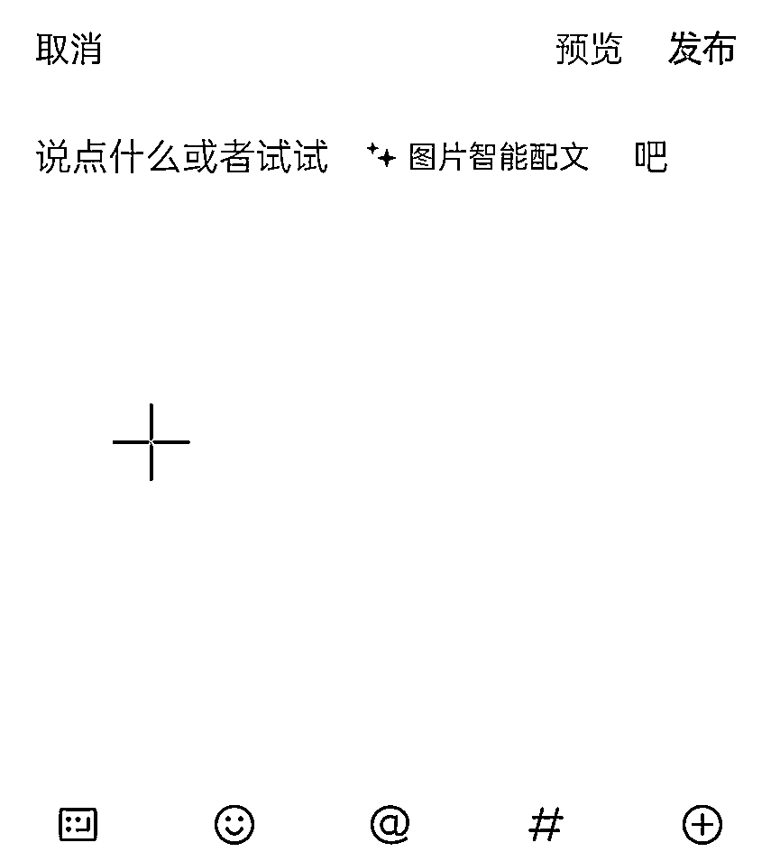
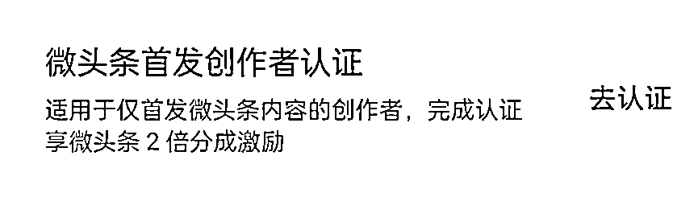
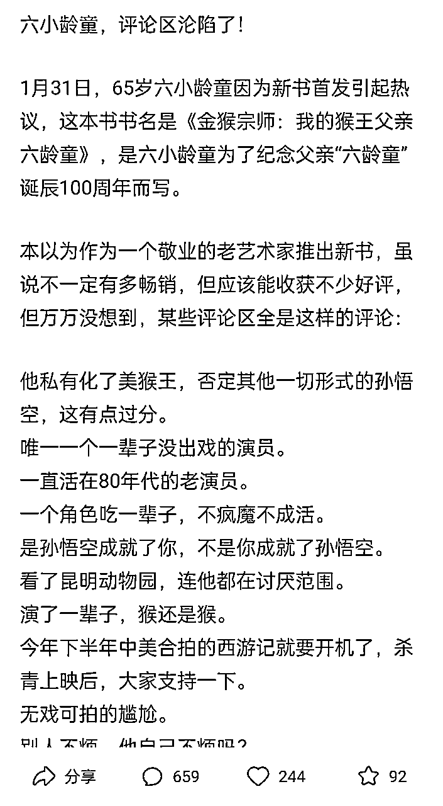
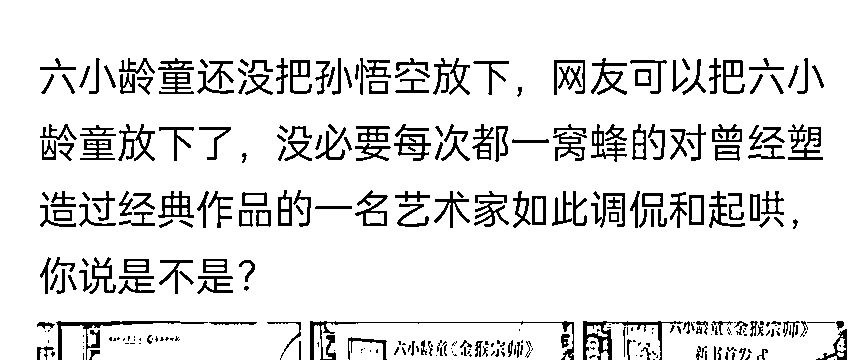

来源：https://kghub8c63q.feishu.cn/docx/FGWWd5QjLoJuMNxUTipcNzDanuh
互联网项目很多，但是真正适合小白的好项目却很少。在我看来适合小白的好项目，一定要符合两点：1、难度系数低 2、正反馈快。
在此要介绍的是微头条写作变现项目，0粉就能开通收益，获取佣金。那这个项目的变现能力有多强？废话不多说，收益图在此！

微头条是今日头条的一个创作板块，0粉就能开通收益，也就是只要写了就有收益。达到100粉丝还能开通微头条首发创作者权益，这就意味着只要你创作的内容首先发在头条，完成认证就能享受到微头条2倍分成激励，个别优秀的创作者甚至能有4倍收益！非常可观！
今日头条的微头条项目其实是老项目，不得不说老项目更能经得起时间的考验。目前这个项目重新火起来了，是因为平台又开始大力扶持微头条板块，收益甚至超过了公众号流量变现，正是入场的好时机。
下载今日头条APP，可以直接通过抖音登陆，没有抖音号的直接回进入抖音注册页面。

登陆后点击个人主页的申请认证，就可以进行实名认证了。刚开始可以不用实名认证，等产生收益后再进行实名认证。

1、点击主页右上角发布，就是发布页面了。写完点击发布就可以。


2、达到100粉以后，微头条发布10条以上，还可以开通微头条首发认证，享受双倍收益。

3、发文时间
可以根据本身的账号粉丝活跃时间选择合适的发文时间。可参考的发文时间是上午9点到下午11点，下午2点到5点，晚上7点到10点，通常是大多数人比较空闲的时间段。可以提前写好保存在草稿里，到时间了再发送。
微头条属于图文写作，但没有标题，所以开头是微头条成功的关键。把最吸引人的部分放在开头，可以有效提高文章的展现量和阅读量，收益自然更高。文章类型有娱乐八卦、历史、人物、生活故事等，选择你擅长的领域写就行。
通常热点是最容易火的，比如明星八卦、热门影视，娱乐新闻等。比如这篇微头条的开头是 “六小龄童，评论区沦陷了！” 这个开头容易引发好奇心，为什么六小龄童的评论区会沦陷？发生了什么事？

一般要求微头条写够500字，然后慢慢增加到1000字。字数要求不高，可以在等公交、坐地铁的时候写，把开头写好了就成功了一半。结尾再加上引人深思的金句和反问。金句可以到微信读书、知乎、微博里找，平时也可以多积累一些。

开头结尾搞定，中间再叙述一下整个故事进行填充，基本上一篇微头条就写出来了。
微头条在发布后会有审核，如果包含敏感词可能会影响发布，审核不通过。写完后可以先用句易网进行查敏感词，把文章复制粘贴到句易网，就会检索出敏感词，把敏感词删掉或修改即可。